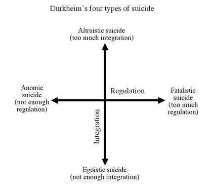

Emile DurkheimHigh priority
Durkheim explains why society holds together: shared rules, shared religion and interdependence. Every critic asks what that harmony hides.
Chapter map#
- Durkheim
Social facts
- Externality
- Independence
- Constraining
- Generality
Religion
- Sacred and profane
- Totem and Churinga
- Functions
- New sacreds
Division of labour
- Mechanical
- Organic
- Abnormal forms
Anomie
- Normlessness
- Transition stage
Suicide
- Integration
- Regulation
- Four types
Criticisms
- Religion
- Division of labour
- Social facts
- Suicide
Exam lens#
The story first#
In simple words#
- Durkheim says society is a reality above individuals; its rules (social facts) are external, general and constraining.
- Religion is society worshipping itself (sacred vs profane, totem, collective effervescence).
- Division of labour moves society from mechanical (sameness) to organic (interdependence) solidarity; the rocky stage between is anomie (normlessness).
- Suicide is a social fact: integration and moral regulation give egoistic, altruistic, anomic and fatalistic suicide.
- Critics: too harmonious, ignores conflict and agency, over-objective, relies on official statistics.
| Term | In plain words |
|---|---|
| Social fact | Collective way of acting, feeling and thinking, external to the individual and coercive. |
| Sui generis | Society is a reality of its own, more than the sum of its parts. |
| Sacred and profane | Sacred = set apart and forbidden; profane = ordinary. |
| Totem | Clan symbol of a plant or animal; the Arunta worshipped it. |
| Collective effervescence | The exalted shared feeling produced by group ritual. |
| Conscience collective | Totality of beliefs and sentiments common to members of a society. |
| Mechanical solidarity | Unity from sameness in pre-modern society. |
| Organic solidarity | Unity from interdependence in modern society. |
| Anomie | Normlessness: old norms gone, new ones not yet formed. |
| Social integration | How strongly individuals are connected to society. |
| Moral regulation | How strongly norms guide and limit desires and behaviour. |
1 · Emile Durkheim#
- Emile Durkheim (1858-1917), born in France, is widely regarded as one of the principal founding fathers of sociology.
- Trained in philosophy but deeply interested in the scientific study of society, Durkheim dedicated his career to establishing sociology as a rigorous academic discipline.
- Emile Durkheim (1858-1917) His approach is marked by a strong commitment to functionalism - the idea that social institutions and practices must be understood in terms of the functions they perform in maintaining social order, integration, and collective life.
- Durkheim studied diverse aspects of social life like religion, economy, and education.
- His contributions not only laid the methodological foundations of the discipline but also shaped some of its most enduring debates on the nature of social life.
2 · Religion and Society#

- In his seminal work ‘Elementary Forms of the Religious Life’; Durkheim defines religion as “a unified system of beliefs and practices related to sacred things, i.e. things set apart & forbidden.
- Religion unites its members into a single moral community.”
- All societies divide their world into two parts - sacred and profane.
- Sacred is always separated and set apart from all the other objects.
- Sacred thing is that which the profane should not and cannot touch with impunity.
- There are detailed rules and regulations and social practices that are laid down detailing how the sacred is to be approached.
- Sacred is protected and isolated through strong prohibitions and taboos.
- It is not the utility of a thing which makes it sacred.
- Anything can be sacred - a stone, a pebble, a colour, a river, a symbol, a plant, or an animal.
- Sacred is not superior to the profane in terms of its utility.
- But the sacred is infinitely superior to the profane in terms of dignity and power.
- Objects may make a passage from profane to sacred & from sacred to profane through rituals.
- There is nothing about the qualities of a particular pebble or a tree that makes it sacred.
- Sacred things must be symbols, and they must represent something.
- To understand the role of religion in society, the relationship between sacred symbols and what they represent must be established.
- Churinga, a sacred object of the Aruna people Durkheim studied the religious beliefs and practices of the Arunta tribe of Australian aborigines.
- Arunta is a simple, small-scale, and primitive society.
- Arunta society is divided into various exogamous clans.
- Each clan is represented by a symbol (of a plant or an animal).
- The symbol of a clan is known as totem. Each clan had its own flag.
- On its flag was carved its symbol or totem.
- Members of a clan expected the help or support of the other members of the clan in case of a dispute with a member of another clan.
- The religion of the Arunta people is known as Totemism.
- In their religious practices, the Churinga was of central importance.
- This was the most sacred object for the clan.
- The totem of the clan was carved on its Churinga.
- Durkheim asks: "So if the totem is at once the symbol of the god and of the society, is that not because the god and the society are only one?" Effectively, the clan members worshipped the totem, which was a symbol of their clan itself.
- Hence, Durkheim deduced that religion involves society worshipping itself.
- God is society divinised.God and society are one and the same.
3 · Functions of religion#
- Religion contributes to the maintenance and well-being of the society in several ways.
- It provides the members of a society with a set of shared morality; a shared set of values and moral beliefs.
- In their absence, there would be no social order, social solidarity, or cooperation.
- The moral code followed by its members binds them into a single moral community and integrates them.
- It thus helps to maintain social order. Religion helps to ensure social control over the individual members.
- By making the important social rules and duties sacred, religion provides society with greater power to control the action of its individual members.Social obligations become religious duties.
- For instance, marriage in primitive societies is not just a social duty but is a sacred bond.
- The moral guidelines of religion thus help to regulate the individual’s behaviour.
- The attitude of respect that people attach to religion is applied to important social duties and obligations.
- The relationship between man and society is exactly the same as the relationship between man and god, which is a relationship of man’s dependence on god/society.
- In worship, people are, in effect, recognising the importance of the social group and their dependence upon it.
- In this way, religion strengthens group unity and promotes social solidarity.
- Religion is also an important source of strength, particularly in difficult times.
- During death, rituals are performed. The members of society offer emotional support and express solidarity with the bereaved.
- Religious rituals are frequently accompanied by collective singing, dancing, and chanting.
- This produces a collective effervescence, which strengthens the bonds binding the individual to the religious community.
- Rituals this bring individuals together in an exalted state, and reinforce their sense of shared identity and purpose.
- Religion thus ensures social cohesion and is a source of social unity and solidarity.
4 · Religion in modern society#
- With modernization, European society was also undergoing secularization; i.e. a decline in the social significance of religion.
- Durkheim was of the view that traditional forms of religion were clearly declining.
- However, religion has not become irrelevant in modern industrial society.
- While traditional religions have been questioned, the essence of religion is still prevalent in modern times.
- The old sacreds are replaced by new sacreds.
- The nation is the new sacred. The symbols of the nation are considered sacred (national flag, national anthem).
- The new ‘sacred’ are also set apart and forbidden.
- For instance, the national flag is held in very high esteem and the flag code lays down the rules governing its use.
- The national emblem is the new totem, representing the people.
- The new ‘religion’continues to perform the functions primitive religions did.
- This new religion provides a new shared morality and shared values (enshrined in the Constitution).
- It binds us beyond caste, class and creed.
- When the national anthem is chanted, it produces a collective effervescence which strengthens the bonds binding the individuals to the wider society.
- The ‘cult of the individual’ is the new religion in modern society.
- The individual’s freedom, dignity and rights are considered sacrosanct and inviolable.
- Any violation of these is considered sacrilege and a moral offence of the highest order.
5 · Division of Labour#

- Division of Labour means the splitting up of an activity into a number of smaller parts or processes.
- These tasks are then assigned to different persons.
- Economists like Adam Smith viewed this process of skill specialisation as resulting in a massive increase in speed, efficiency, quality, and economic productivity.
- Durkheim’s analysis of division of labour brought new dimensions to its understanding, broader than that of the economists.
- For Durkheim, division of labour is not confined to the economic realm.
- It exists throughout the society. ‘Division of Labour in Society’ was Durkheim’s Ph.D. thesis and his first major sociological work.
- In it, he suggests that the division of labour fulfils some vital needs of the society.
- Durkheim was concerned about the effects of increased individualism on modern society.
- In pre-modern society, it is as if people are made out of the same mould.
- The population is homogeneous and the conscience collective is strong (conscience collective refers to the totality of beliefs and sentiments common to the members of the society).
- Individualism is kept in check, and collectivism is emphasized.
- People are bound together strongly by a mechanical solidarity due to shared sentiments, lifestyles and community orientation.
- But how will modern industrial society stay intact with so much individualism?
- According to Durkheim, an elaborate and complex division of labour ensures organic solidarity among the members of the society due to their greater interdependence on each other.
- Dividing work not only leads to efficiency but also ensures cohesion in society As the volume (size of the population), material density (density of population), and moral density (the frequency of social interactions) increase; society changes from pre-modern to modern society.
- As the society modernizes, a complex form of division of labour with a large number of occupations and a high degree of skills specialisation emerges.
- This enables the society to regulate competition within each occupational category within manageable levels.
6 · Social change from pre-modern to modern society#
| Aspect | Pre-Modern Society | Modern Society |
|---|---|---|
| Technology | Rudimentary | Advanced |
| Number of occupations | Few | Many |
| Basis of division of labour | Ascriptive criteria like caste and gender | Skills, talent, education, inclination |
| Nature of division of labour | Simple | Complex |
| Level of specialisation | Low | High |
| Type of population | Homogenous | Heterogeneous |
| Conscience Collective | Strong | Weak |
| Individualism | Kept in check | High |
| Law | Repressive | Restitutive |
| Social relationships | Personal, emotional, informal, durable, and multi-dimensional | Transactional, formal, rules-based, superficial, unemotional, purpose-driven, and transient |
| Interdependence | Less | More |
| Basis of social solidarity | Sameness | Interdependence |
| Nature of social solidarity | Mechanical solidarity | Organic solidarity |
7 · Functions of division of labour#
- 1. Improves efficiency and productivity.
- 2. Ensures interdependence and organic solidarity.
- 3. Peaceful solution to the needs of the society, created by the increase in population size and density.
- It reduces the competition in society, enabling peace and harmony.
- 4. Integrates societies in the absence of a strong collective conscience.
8 · Anomie#

- The term ‘anomie’ literally means normlessness.
- When the society changes from traditional to modern, there is an intervening stage of anomie.
- During this stage, the society is unable to offer clear guidelines to its members.
- In many areas of social life, there may be an absence of any guidelines.
- In some other areas of social life, there may be conflicting norms.
- This creates a general atmosphere of confusion and chaos in the society.
- Anomie occurs during periods of drastic and rapid changes in the political, economic, and social structures.
- The traditional norms may have been destroyed but new norms have not yet emerged to replace them.
- The old scale has been upset. But a new one has not yet been devised.
- The period of anomie is unstable, chaotic, and rife with conflict.
- It is a period of derangement. The social norms that provide continuity, stability and certainty have been weakened or are missing.
- Anomie recently engulfed Nepal Individual members of the society are consumed by an insatiable desire.
- Many members of the society consider their work meaningless and not valued by the society.
- The period of anomie gives rise to social tensions and social disorder.
- There is a general atmosphere of hopelessness and widely prevalent unhappiness in society.
- However, the phase of anomie is transitional.
- Modern norms will eventually completely replace the traditional ones .
- S ociety will once again offer clear guidelines to its members.
- Confusion and unhappiness will be a thing of the past as the society transforms into a fully modern society.
- There are 3 abnormal forms of division of labour.
- (i) Anomic division of labour exists when there is a lack of clear guidelines governing the economic behaviour of man.
- Due to unchecked and unlimited desires of people, there are frequent industrial conflicts.(ii) Forced division of labour exists when an individual is compelled into an occupational role which is not suited to his temperament, ability, inclination, and interests.
- For example, due to monetary constraints, poverty, or caste system.
- (iii) Inadequate Organisation of Work - When the workers are not clear about their roles.
- There is no proper division of tasks among the people, resulting in inefficiency.
- These abnormal forms can be addressed by: (i)Establishment of professional associations in different areas of work.
- Such associations are self-regulatory bodies comprising members of their own field.
- They provide a code of conduct and inculcate in their members a sense of commitment and duty, and temper their greed.
- (ii)Contract A formal written contract will make clear the expected duties of each party to the contract and what they can hope to receive for the performance of their duties.
- (iii)State action The state can play an important role in checking abnormal division of labour.
- It can intervene through legislation, policies and schemes that enable people to seek opportunities of their inclination by providing scholarships or removing historical disabilities.
9 · Social Facts#
- Society has a reality of its own over and above the individuals who comprise it.
- Members of the society are constrained by social facts , which are ‘collective ways of acting, feeling, and thinking that are external to the individual.
- Social facts are endowed with the power of coercion by reason of which they control the individual.’ Language and law are examples of social facts.
- For Durkheim, beliefs and moral codes are passed down by generations and are shared by everyone who constitute the society.
- It is not the consciousness of the individual that directs his behaviour.
- Rather, it is the common beliefs and sentiments that transcend the individual and shape his consciousness.
- Therefore, for Durkheim, society is a system that obeys its own laws.
- The society is ‘sui generis’. It is more than the sum total of its parts.
- Society has a reality of its own, irreducible to the actions, motives, or psychology of individual persons.
- It has an independent existence and distinctive nature that emerge from social interaction but cannot be fully explained by summing up individual behaviours.
- When individuals come together, they generate collective consciousness, norms, values, and institutions that transcend them and act back upon them.
- These collective forces shape how people think, feel, and behave, often without them being fully aware of it.
- Thus, society is not merely a “collection of individuals”; rather, it is a higher-order existence that produces social facts-rules, customs, and beliefs-which possess coercive authority over the individuals.
- Durkheim was one of the founding fathers of the discipline of sociology.
- In its initial years, the discipline of sociology faced resistance from some of the existing branches of knowledge, such as philosophy and psychology.
- It was in this context that Durkheim clearly demarcated the subject matter of the discipline of sociology.
- He described sociology as the study of ‘ social facts.’ By conceptualizing and defining social facts, Durkheim was largely successful in giving the nascent discipline of sociology its distinctive subject matter & identity.
10 · Characteristics of social facts#
- 1. Externality - Every individual is born into an existing society with a definite social organisation.
- There are various social norms and values he finds readymade at birth and learns through the process of socialisation.
- However, these exist prior to the individual and are external to him.
- 2. Independence - Social facts are independent of the will, choice, or inclination of the individual members of the society.
- Social facts are also independent of their individual manifestations.
- 3. Constraining - Social facts constrain individual members to conform.
- Social facts exert themselves on the individual; and extract compliance from the individual.
- 4. Generality - Social facts are general in character.
- They are what most people are acting, thinking, and feeling.
- Social facts are classified into two types:
- 1. Material social facts - those social facts that are directly observable.
- For example, technology, architecture, and laws.
- 2. Non-material social facts - those social facts that are not directly observable.
- For example, values, morals, and conscience collective.
11 · Methodology to study social facts#
- Durkheim gave a detailed methodology to study social facts in his book ‘Rules of the Sociological Method’.
- A positivist, he advocated the application of the scientific method to study social facts.
- Durkheim insisted that sociologists should study social facts as ‘things’
- 1. Rules for Observation a. The first and foremost rule is that ‘treat social facts as things.’ Social facts are to be treated as a ‘thing’ which is directly observable and empirically capturable.
- They should be quantified and measured. The data obtained should be processed using statistical tools and techniques.
- Durkheim suggests that social facts are real and have an objective reality.
- b. The sociologist must clearly define and demarcate the phenomenon being studied.
- c. The sociologist must discard any preconceived notions that dominate the minds of ordinary men, and adopt an emotionally neutral attitude while studying social facts.
- 2. Rules for Distinguishing between normal and pathological social facts A social fact is considered a normal social fact if it is generally encountered in society.
- Any deviation from this standard is pathological.
- 3. Rules for Classification Since the scientific method of experimentation has limited application in sociological research, sociologists may rely upon other scientific methods such as the comparative method while studying society in order to establish cause-effect relationships.
- For comparison, the sociologist must do proper classification of the social phenomena into appropriate categories.
- 4. Rules for Explanation a. The causative factors of a social phenomenon may be different from the functions which it performs.
- b. ‘Trace social facts to other social facts.’ - Social facts cannot be explained by reducing them to any underlying natural, biological, or psychological factors.
- The explanation of any social phenomenon has to be found in the nature of the society itself.
- c. Explanation of social facts must yield general theories.
- d. Durkheim’s formulation of social facts ultimately provided sociology with both a distinct subject matter and a rigorous scientific orientation.
- By insisting that social facts are external to individuals and endowed with coercive power, he shifted attention away from psychological or philosophical speculation towards empirically observable, collective realities.
- In methodological terms, Durkheim’s demand that social facts be “treated as things,” and studied objectively, supplied sociology with definite rules of inquiry parallel to the natural sciences.
12 · Suicide#



- Durkheim’s major work on suicide,Le Suicide (1897), represents the first systematic and empirical sociological study of the phenomenon.
- Durkheim defined suicide as “All cases of death resulting directly or indirectly from a positive or negative act of the victim himself, which he knows will produce this result.” Durkheim saw suicide as a social fact, not a psychological one Durkheim collected comparative statistical data from several European societies over multiple decades, classifying suicide rates according to variables such as gender, marital status, religion and other demographic features.
- Durkheim argued that suicide must be understood as a social phenomenon rather than merely a psychological one, because its incidence varies significantly from society to society, while remaining fairly stable within a given society over long periods of time.
- This regularity indicates that suicide rates are shaped by social currents and collective conditions rather than individual temperament or personal anomalies.
- Durkheim proposed that suicide rates are determined by two fundamental social forces: (1) the degree of social integration, or the extent to which individuals are connected to society, and (2) the level of moral regulation, or the normative constraints that guide and limit the desires and behaviour of individuals.
- On the basis of these forces, he identified four types of suicide: egoistic, altruistic, anomic and fatalistic.
- 1. Egoistic suicide occurs when the level of social integration is excessively low.
- Individuals experience a sense of detachment from society.
- In such conditions, collective life fails to provide a sense of belonging and support, leaving individuals untethered and making them more vulnerable to despair.
- Durkheim argued that egoistic suicide is characteristic of societies where excessive individualism undermines collective sentiment.
- He found, for instance, that suicide rates were higher among Protestants than Catholics because Protestantism allowed greater intellectual autonomy while Catholicism encouraged collective ritual life and community.
- Similarly, suicide rates were higher among unmarried individuals than married ones, because marriage increases integration.
- Suicide rates were higher in urban areas than rural areas, due to anonymity, impersonality, and weaker community ties.
- 2. Altruistic suicide emerges when social integration is excessively high, and the individual self is submerged within collective life to the extent that personal existence is viewed as insignificant.
- Under such circumstances,sacrifice of the self is morally encouraged, honourable or even obligatory, because one’s primary moral duty is to the group rather than to oneself.
- Durkheim considered altruistic suicide as typical of traditional and highly cohesive societies.
- Practices such as sati in ancient India demonstrated the expectation that widows should sacrifice themselves for as a religious duty.
- Ritual suicide among Japanese samurai, including seppuku, similarly illustrates situations where the preservation of honour or loyalty to the group is valued above individual survival.
- 3. Anomic suicide results from insufficient moral regulation, in contexts where social norms become unclear, disrupted or ineffective.
- Rapid social and economic change can disorganise the normative order, leaving individuals without stable expectations or rules to govern behaviour.
- Without proper regulation, desires become limitless, producing frustration and despair.
- Durkheim emphasised that both economic crisis and sudden prosperity can lead to suicide, since both conditions disturb the moral framework that structures desire.
- People may experience normlessness, loss of direction, unfulfilled aspirations and disorientation.
- Periods of economic depression or stock market collapse can produce instability, as individuals find themselves without adequate guidance on how to structure their lives.
- Sudden and massive wealth can lead to aimlessness, emptiness, and excessive freedom , without moral constraints.
- 4. Fatalistic suicide is produced by excessively high moral regulation, in which the individual feels overwhelmingly constrained, oppressed or controlled by external forces.
- In such situations, personal hopes and future prospects are crushed by rigid norms and authoritarian structures, creating a sense of hopelessness and suffocation.
- Individuals experience extreme regulation and oppressive control, leaving no room for autonomy, hope, or change.
- Conditions such as imprisonment, slavery or tyrannical domestic or work environments where individuals are subjected to extreme discipline, minute regulation of conduct and denial of autonomy, may lead them to view death as the only escape from unbearable constraint.
- Durkheim thus argued that the different types of suicide are responses to societal conditions.
- Modern societies, characterised by individualism and rapid change, are more susceptible to egoistic and anomic suicide.
- Traditional societies, marked by strong collectivism and rigid authority, are more prone to altruistic and fatalistic suicide.
- In conclusion, Durkheim’s theory established suicide rate as a social fact whose causes lie not so much in personal distress but in the broader organisation of social life.
- His study of suicide clearly demonstrated the application of the scientific method in sociological research, and laid the foundation for quantitative methods and comparative research in sociology.
13 · Criticisms of Durkheim’s Theory of Religion#
- Durkheim’s theory of religion sought to explain religion as a social institution that generates collective solidarity.
- Although highly influential, his theory has been widely criticized for its methodological limitations, overgeneralizations, and narrow focus on collective aspects.
- 1. Ignores religious conflict: Durkheim sees religion as a source of social cohesion but overlooks its role in producing sectarian conflicts, communal violence and wars throughout history.
- 2. Overgeneralization: Durkheim theory was based on the study of the primitive Arunta tribe.
- But what may hold for a simple homogeneous tribe may not apply to more complex, large-scale and heterogeneous religions and societies.
- 3. Armchair methodology: Durkheim never conducted fieldwork among the Arunta, relying instead on secondary ethnographic reports.
- 4. Sacred–profane dichotomy is overly simplistic: The clear separation between sacred and profane may not exist in many cultures where objects and practices occupy a continuum or change meaning depending on context.
- For example, Hindus consider the daily meal as a blessing from Goddess Annapurna.
- 5. Ignores oppression and exploitation: Durkheim neglects how religion can legitimize domination, including caste oppression and patriarchy.
- Feminists like Karen Armstrong and Kamla Bhasin argue that religions justify the subordination of women.
- 6. Underestimated persistence of religion: Durkheim’s claim that traditional religions would decline in modern society is contradicted by their continuing influence today.
- 7. Neglect of personal spirituality: Durkheim treats religion as purely collective, ignoring the inner, experiential and spiritual dimensions that shape individual identities and provide meaning beyond collective rituals.
- Despite above limitations, his insights into the collective nature of religious life laid the foundation for subsequent sociological inquiry.
- Durkheim’s theory of religion was a pioneering sociological attempt to develop a scientific explanation of religion.
14 · Criticisms of Durkheim’s Theory of Division of Labour#
- Durkheim’s theory of division of labour proposed that increasing social differentiation leads to a shift from mechanical solidarity to organic solidarity, producing greater social cohesion.
- While highly influential, his account has been criticized for being overly optimistic, insufficiently attentive to power, ignoring conflict and the role of the individual.
- 1. Over-harmonised view of workplace: From a Marxist perspective, workplace relations are characterised primarily by conflict, exploitation, and class struggle than cooperation, integration, and moral regulation, which Durkheim emphasised.
- Marxists argue that modern division of labour creates alienation, and domination, in contrast to Durkheim’s assertion that it enhances social solidarity.
- 2. Oversimplifies the distinction between traditional and modern societies: Durkheim assumes that traditional society is defined by mechanical solidarity and modern society by organic solidarity, but critics point out that even traditional societies exhibit features of organic solidarity, such as functional interdependence, specialization of roles, and stratification.
- For example, Jajmani relations in pre-modern India were characterized by interdependence and organic solidarity.
- 3. Persistence of anomie: Durkheim treats anomie as a transitional phase during the shift to modernity, but R.K. Merton argues that anomie is a persistent and structural feature of modern American society.
- Modern societies institutionalise normlessness, rather than overcoming it through organic solidarity.
- 4. Downplays the importance of the individual: Durkheim emphasises collective conscience and moral regulation, but critics argue that modern division of labour enhances individual autonomy, creativity, and self-expression rather than simply subordinating individuals to collective norms.
- His focus on social integration overlooks how individuals negotiate identities, resist norms, and shape social change.
- Despite criticisms, Durkheim’s theory of division of labour remains foundational for understanding social differentiation and solidarity.
- It has been rightly challenged for romanticising modern society, oversimplifying traditional societies, and neglecting conflict, power, and agency.
- Later theorists, including some functionalists like Merton, have offered more nuanced accounts that incorporate inequality, deviance, and the enduring tensions between individual freedom and social integration.
15 · Criticisms of Durkheim’s Concept of Social Facts#
- Durkheim’s concept of social facts was central to his attempt to establish sociology as a scientific discipline with a distinct subject matter.
- However, various scholars have questioned his formulation, arguing that society cannot be adequately understood through his framework.
- 1. Overly objective approach: Durkheim treats social facts as an objective reality, but non-positivists argue that social reality is socially constructed.
- Moreover, critics contend that it is impossible to separate the researcher from the research, hence objectivity akin to natural sciences is not possible in sociology.
- 2. Neglect of agency and creativity: By emphasising the coercive power of social facts, Durkheim overlooks the capacity of individuals to resist, reinterpret, and transform social norms.
- Critics argue that individuals are not passive recipients of social rules but active agents who shape culture.
- 3. Questionable analogy to natural sciences: Durkheim’s claim that social facts should be studied "as things" has been criticised for reducing complex, meaningful social phenomena to observable, measurable objects, similar to physical phenomena.
- 4. Only focuses on the external: Critics contend that Durkheim examines the directly observable aspects of reality.
- Human action, however, cannot be fully explained by observing the externally visible aspects.
- Human action is greatly shaped by subjective meanings, motives and states of emotion; which Durkheim’s method cannot capture.
- 5. Difficulty in empirically identifying social facts: Critics assert that it is not always possible to clearly distinguish social facts from individual-level phenomena, making empirical research based on his definition challenging and inconsistent.
- Particularly, non-material social facts are difficult to capture and quantify.
- While Durkheim’s concept of social facts has been subjected to legitimate criticisms, it was perhaps one of the most important early formulations that helped sociology acquire a scientific character.
- Along with August Comte, Durkheim laid the theoretical and methodological framework for the positivist tradition.
- Durkheim’s notion of social facts gave early sociology its distinctive identity as well as scientific methodology.
16 · Criticisms of Durkheim’s Theory of Suicide#
- Durkheim’s theory of suicide is a foundational sociological contribution, yet it has been widely critiqued on methodological and theoretical grounds, as follows:
- 1. Reliance on official statistics: Durkheim collected suicide statistics from official records.
- However, authorities like the police may under-report suicides since suicide is a criminal offence in many jurisdictions, leading to inaccurate and incomplete data.
- Moreover, suicides that are concealed, misclassified, or unreported are not captured in official records, thereby undermining the reliability of Durkheim’s empirical foundation.
- 2. Ignoring attempted suicides: Durkheim focuses exclusively on actual suicides, overlooking attempted suicides which reflect suicidal intent, distress, and prevalence of suicidal tendencies.
- Feminists highlight that women attempt suicide more frequently than men, and excluding attempted suicides produces a gender-biased understanding of suicidal behaviour.
- 3. Suicide as a socially constructed reality: Non-positivist sociologists, especially ethnomethodologists like Atkinson, argue that suicide is not an objective fact but a label applied through negotiation between actors such as family, police, medical personnel, investigators, and neighbours.
- These negotiations determine whether a death is officially recorded as suicide or not, suggesting that suicide rates are socially constructed rather than objective facts.
- 4. Downplaying psychological factors: Durkheim focuses on social conditions but underestimates individual psychological factors such as personality, depression, mental illness, coping mechanisms, and emotional crises.
- Even when social conditions are similar, only few members of a social category commit suicide (e.g., not all Protestants commit suicide despite low social integration), indicating that psychological factors significantly mediate suicidal behaviour.
- 5. Denial of individual agency: Durkheim is criticised for presenting individuals as passive recipients of social currents, leaving little scope for personal agency, subjective meaning, or conscious decision-making.
- Critics argue that suicide often involves individual reflections, emotions, and choices that cannot be fully reduced to structural forces.
- While Durkheim’s theory remains a pioneering sociological explanation of suicide, its reliance on problematic data, neglect of psychological processes, and dismissal of interpretive dimensions limits its explanatory power.
- Contemporary perspectives emphasise a more integrated approach that combines social, psychological, and cultural factors to explain suicidal behaviour in a nuanced and multidimensional way.
Traps#
| Trap | What goes wrong, and the rule |
|---|---|
| Anomie is transitional for Durkheim | He treats anomie as a passing stage in the shift to modernity; Merton argues it is persistent and structural. Exam-hall rule: write 'transitional' for Durkheim and 'persistent' for Merton. |
| Mechanical is not modern | Mechanical solidarity belongs to pre-modern societies (sameness); organic to modern (interdependence). Exam-hall rule: Mechanical = Man the same; Organic = Others needed. |
| Integration and regulation are two axes | Egoistic and altruistic vary with integration; anomic and fatalistic vary with moral regulation. Exam-hall rule: draw the 2 x 2 grid before listing the four types. |
Recall sheet#
Read once, hide it, then rebuild the chapter from memory.
- Durkheim's years and birthplace? 1858-1917; born in France
- Durkheim defined sociology as the study of? Social facts
- Four characteristics of social facts? Externality, independence, constraining, generality
- Two types of social facts? Material (observable) and non-material (values, morals, conscience collective)
- Whom did Durkheim study for religion? The Arunta tribe of Australian aborigines
- Arunta religion is called? Totemism; central object Churinga
- Durkheim's view of God? God is society divinised
- Name the new sacreds in modern society The nation (flag, anthem, emblem) and the cult of the individual
- Mechanical vs organic solidarity? Sameness (pre-modern) vs interdependence (modern)
- Law in pre-modern vs modern society? Repressive vs restitutive
- Three abnormal forms of division of labour? Anomic, forced, inadequate organisation of work
- Remedies he suggests? Professional associations, contract, state action
- Year and title of his work on suicide? 1897, Le Suicide
- Two forces behind suicide rates? Social integration and moral regulation
Abbreviation column#
| Short form | Full form | One-line meaning |
|---|---|---|
| PYQ | Previous Years' Questions | Questions UPSC has already asked |
| sui generis | Latin: of its own kind | Society is a reality of its own |
| I/7b/20 | Paper I / Question 7b / 20 marks | How the handout labels each PYQ |
Revise#
| Day | What to do |
|---|---|
| Day 0 | Read the Exam lens and the notes; mark the chapter done |
| Day +1 | Recall sheet: read once, hide, rebuild |
| Day +3 | Flashcards: missed ones only |
| Day +7 | Quick quiz; fix each miss against the Traps |
| Day +21 | Write two Mains answers from memory using the skeletons |
| Day +45 | Blank-page test: redraw the chapter map |
Test yourself#
Quick quiz
Flashcards
Tap the card to flip.
Mains answer skeletons
One for each Mains PYQ quoted in the handout. Tap to open; try the answer first.
2025 · 20 marks · How do Marx, Weber and Durkheim differ in understanding religion? Explain.
Question. How do Marx, Weber and Durkheim differ in understanding religion? Explain.
- Intro: name Emile Durkheim and state the central idea in one line (see The story first).
- Body: build the answer from the notes under: Religion and Society; Functions of religion; Religion in modern society; Criticisms of Durkheim’s Theory of Religion.
- Close: finish with the matching criticisms section and a one-line judgement.
2024 · 10 marks · Describe various characteristics of a ‘social fact’. How is rate of suicide a social fact according …
Question. Describe various characteristics of a ‘social fact’. How is rate of suicide a social fact according to Durkheim?
- Intro: name Emile Durkheim and state the central idea in one line (see The story first).
- Body: build the answer from the notes under: Suicide; Criticisms of Durkheim’s Theory of Suicide; Social Facts; Characteristics of social facts; Criticisms of Durkheim’s Concept of Social Facts.
- Close: finish with the matching criticisms section and a one-line judgement.
2022 · 10 marks · Critically examine the relevance of Durkheim's views on religion in contemporary society.
Question. Critically examine the relevance of Durkheim's views on religion in contemporary society.
- Intro: name Emile Durkheim and state the central idea in one line (see The story first).
- Body: build the answer from the notes under: Religion and Society; Functions of religion; Religion in modern society; Criticisms of Durkheim’s Theory of Religion.
- Close: finish with the matching criticisms section and a one-line judgement.
2022 · 3b20 marks · Critically examine how Durkheim and Merton explicate Anomie.
Question. Critically examine how Durkheim and Merton explicate Anomie.
- Intro: name Emile Durkheim and state the central idea in one line (see The story first).
- Body: build the answer from the notes under: Anomie.
- Close: finish with the matching criticisms section and a one-line judgement.
2022 · 10 marks · Durkheim argued that society is more than the sum of individual acts. Discuss
Question. Durkheim argued that society is more than the sum of individual acts. Discuss
- Intro: name Emile Durkheim and state the central idea in one line (see The story first).
- Body: build the answer from the notes under: Social Facts.
- Close: finish with the matching criticisms section and a one-line judgement.
2021 · 10 marks · Explain whether Durkheim’s theory of Division of Labour is relevant in the present-day context.
Question. Explain whether Durkheim’s theory of Division of Labour is relevant in the present-day context.
- Intro: name Emile Durkheim and state the central idea in one line (see The story first).
- Body: build the answer from the notes under: Division of Labour; Social change from pre-modern to modern society; Functions of division of labour; Criticisms of Durkheim’s Theory of Division of Labour.
- Close: finish with the matching criticisms section and a one-line judgement.
2020 · 20 marks · Critically analyse Durkheim’s views on elementary forms of religious life and role of religion. Also…
Question. Critically analyse Durkheim’s views on elementary forms of religious life and role of religion. Also discuss the consequences of religious revivalism in contemporary society.
- Intro: name Emile Durkheim and state the central idea in one line (see The story first).
- Body: build the answer from the notes under: Religion and Society; Functions of religion; Religion in modern society; Criticisms of Durkheim’s Theory of Religion.
- Close: finish with the matching criticisms section and a one-line judgement.
2019 · 10 marks · How well do you think Tonnis, Durkheim, Weber and Max predicted the character of modern society? Cri…
Question. How well do you think Tonnis, Durkheim, Weber and Max predicted the character of modern society? Critique.
- Intro: name Emile Durkheim and state the central idea in one line (see The story first).
- Body: build the answer from the notes under: Division of Labour; Religion in modern society.
- Close: finish with the matching criticisms section and a one-line judgement.
2018 · 10 marks · In what way did Durkheim perceive religion as functional to society?
Question. In what way did Durkheim perceive religion as functional to society?
- Intro: name Emile Durkheim and state the central idea in one line (see The story first).
- Body: build the answer from the notes under: Religion and Society; Functions of religion; Religion in modern society; Criticisms of Durkheim’s Theory of Religion.
- Close: finish with the matching criticisms section and a one-line judgement.
2018 · 20 marks · Explain Durkheim’s basic arguments on suicide. Can you analyse high suicide rates of contemporary In…
Question. Explain Durkheim’s basic arguments on suicide. Can you analyse high suicide rates of contemporary Indian society with Durkheim’s theory?
- Intro: name Emile Durkheim and state the central idea in one line (see The story first).
- Body: build the answer from the notes under: Suicide; Criticisms of Durkheim’s Theory of Suicide.
- Close: finish with the matching criticisms section and a one-line judgement.
2017 · 20 marks · Discuss distinct sociological method adopted by Emile Durkheim in his method of ‘suicide’.
Question. Discuss distinct sociological method adopted by Emile Durkheim in his method of ‘suicide’.
- Intro: name Emile Durkheim and state the central idea in one line (see The story first).
- Body: build the answer from the notes under: Suicide; Criticisms of Durkheim’s Theory of Suicide; Methodology to study social facts.
- Close: finish with the matching criticisms section and a one-line judgement.
2015 · 10 marks · Elaborate the views of Durkheim on “The Elementary Forms of Religious life”.
Question. Elaborate the views of Durkheim on “The Elementary Forms of Religious life”.
- Intro: name Emile Durkheim and state the central idea in one line (see The story first).
- Body: build the answer from the notes under: Religion and Society; Functions of religion; Religion in modern society; Criticisms of Durkheim’s Theory of Religion.
- Close: finish with the matching criticisms section and a one-line judgement.
2014 · 10 marks · “According to Durkheim, the essence of religion in modern society is the same as religion in primiti…
Question. “According to Durkheim, the essence of religion in modern society is the same as religion in primitive society.” Comment.
- Intro: name Emile Durkheim and state the central idea in one line (see The story first).
- Body: build the answer from the notes under: Religion and Society; Functions of religion; Religion in modern society; Criticisms of Durkheim’s Theory of Religion; Division of Labour.
- Close: finish with the matching criticisms section and a one-line judgement.
2013 · 20 marks · Compare Karl Marx with Emile Durkheim with reference to the framework of ‘division of labour’.
Question. Compare Karl Marx with Emile Durkheim with reference to the framework of ‘division of labour’.
- Intro: name Emile Durkheim and state the central idea in one line (see The story first).
- Body: build the answer from the notes under: Division of Labour; Social change from pre-modern to modern society; Functions of division of labour; Criticisms of Durkheim’s Theory of Division of Labour.
- Close: finish with the matching criticisms section and a one-line judgement.